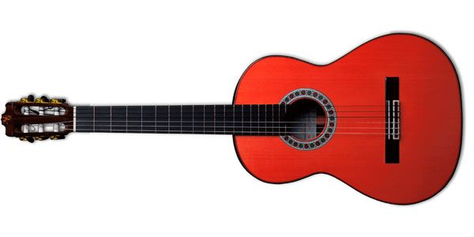
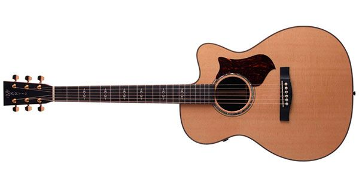
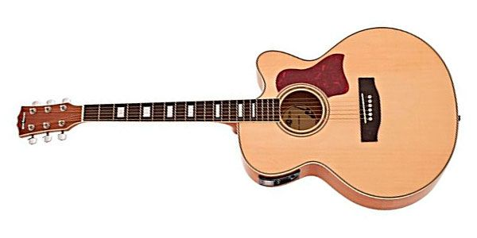
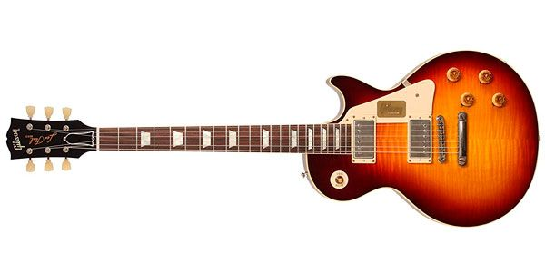

| Guitarras Clasicas |
Lleva un grupo de cuerdas metálicas entorchadas y otro grupo son cuerdas de nylon, las cuales producen un sonido muy natural y dulce. |
 |
| Guitarras Acústicas |
Este tipo de guitarra es un instrumento musical de cuerdas que están bien templadas; cuenta con una caja de resonancia que es usada para amplificar el sonido que produce la vibración de las cuerdas. |
 |
| Guitarras Electroacústicas |
Tienen instalado un micrófono que puede ser conectado a sistemas PA o amplificadores. Esto se hace con la finalidad de que suene con mayor fuerza; emplea transductores piezoeléctricos, lo cual permite obtener un sonido más agudo y natural. |
 |
| Guitarras Electricas |
La guitarra eléctrica es un instrumento musical electrófono con cuerdas de metal, que cuenta con uno o más transductores electromagnéticos, que son llamados pastillas y en inglés se le llama pickups, lo que convierte las vibraciones de las cuerdas en señales eléctricas con la capacidad de que sean procesadas y amplificadas. |
 |